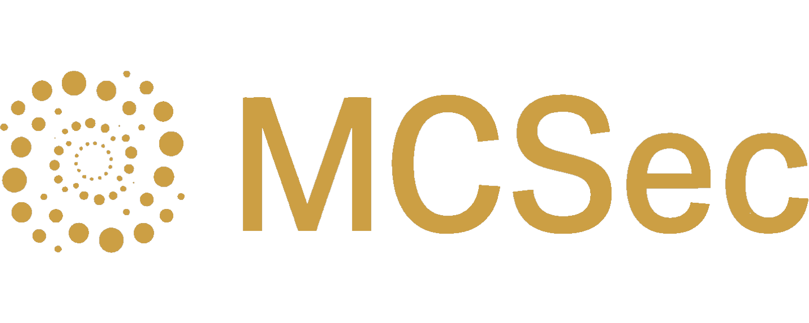
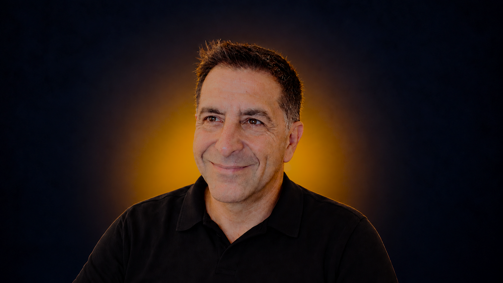
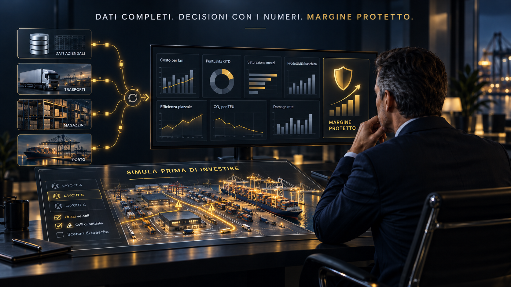
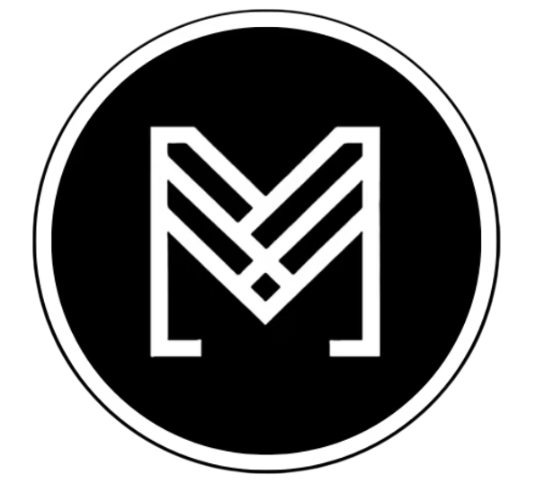
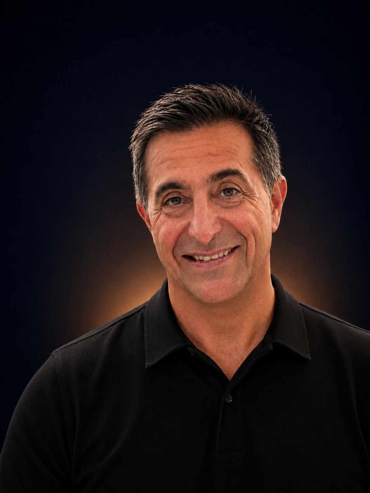

Controllo di gestione con AI, simulazione e formazione
per chi muove l'Italia, ogni giorno.

Cyber Shield resta nel portafoglio: la sicurezza informatica ALIS la presidia già in casa, con Polizia di Stato e DI.GI. Academy.

titolari, dirigenti e controller delle imprese socie
L'AI si usa per fare meglio il proprio mestiere, non per farsi sostituire.
il controllo di gestione automatizzato, per ogni reparto che conta
Demo: mcsec.it/performance-intelligence
la copia digitale economico-finanziaria del tuo terminal, magazzino o flotta
Testate ogni decisione prima di spendere un euro.
MCSec mette al servizio dei soci ALIS competenze complementari per migliorare la produttività quotidiana.
Per fare questo si avvale di collaborazioni con realtà altamente qualificate, in grado di produrre:

Martes AITre specializzazioni complementari, un team di grande respiro, una sola regia.
Prima la formazione, poi quattro passi, uno alla volta. Ogni passo si fa solo se il precedente ha dato i numeri.
Nessun impegno prima di aver visto i numeri.
Parlo la lingua di chi muove le merci.

Trasformiamo i dati in valore, insieme.
www.mcsec.it · info@mcsec.it